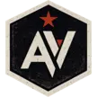

Scan the machine
See the package, file path, and reason.
Vault ties readable credentials to the tool that can use them, so you know which local paths need attention before the next agent run.

Automic VaultFrom the creator of Homebrew
Hardening your tooling for the agent era from the package management layer
gh auth token requires human approval
curl can read ~/.netrc
Locks up aws tokens tight
npm publish needs a real approval gate
Coding agents treat ~/.aws/credentials like any other
readable file. Vault finds exposed credential paths and shows what
to fix before the next run.
~/.netrc HTTP passwords
~/.aws/credentials cloud keys
~/.config/gh GitHub tokens
.env project secrets
~/.npmrc registry tokens
mcp.json server credentials
Install Vault, scan your Mac, harden supported packages, then leave it running.
Scan the machine
Vault ties readable credentials to the tool that can use them, so you know which local paths need attention before the next agent run.
Harden the package
Vault hardening patches supported tools so credentials stay in protected storage and reach the approved executable only when it runs.
Gate the command
Prompt rules can fail. Vault asks from the local tool layer when a command wants a secret, publishes a package, or changes cloud state.
npm publish. Approve this command?
Deny
Approve
Keep Vault running
After the first scan, Vault keeps watching for new CLIs, stale tools, and credentials that slip back into local files.
Automic Vault.app
Search packages, inspect hazards, approve installs with Touch ID, follow updates,
and use the av CLI when the terminal is faster.

Keep using Homebrew. Add a safety pass after tools land on your Mac.
1Password stores shared secrets. Automic Vault controls the local command that asks for one.
A prompt can be bypassed. A local approval gate still asks when the command runs.
Vault reviews formula and tap candidates for local secret paths. Fixed packages get hardening. Remaining risks show as hazards.
I built Homebrew. It was designed before AI agents existed.
Install with Homebrew. Secure with Automic Vault.
Stop agents, malware, and compromised tools from accessing secrets or performing sensitive actions without approval.
– Max Howell, Creator of Homebrew
Free and open source
Find plaintext local credentials before an agent starts.
02 Secrets Manager for AI AgentsStore secrets locally and serve them only to approved tools.
03 Secure AWS CLI CredentialsKeep cloud credentials out of ambient config files.
04 AI Agent Approval GatesPut approvals in front of commands that use power.